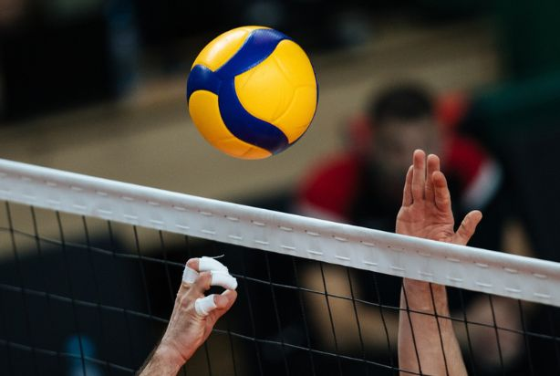

Volei
O voleibol é um esporte praticado entre duas equipes numa quadra retangular. Ela é dividida por uma rede colocada verticalmente sobre a linha central.O voleibol é jogado com uma bola e com as mãos. O objetivo principal é lançar a bola por cima da rede e fazê-la tocar no chão do adversário.O voleibol é um esporte praticado entre duas equipes numa quadra retangular. Ela é dividida por uma rede colocada verticalmente sobre a linha central.O voleibol é jogado com uma bola e com as mãos. O objetivo principal é lançar a bola por cima da rede e fazê-la tocar no chão do adversário.Posições do voleibolCada jogador tem uma posição dentro da quadra, apresentando a seguinte ordem de rotação: Quando se comete faltas no vôlei?As regras do voleibol incluem diversas faltas no saque, ataque, passe de bola, toques, posição, rotação de jogadores, dentre outros. Alguns exemplos de falta são:Dois Toques: quando um jogador toca a bola duas vezes consecutivas ou a bola bate em várias partes de seu corpo.
